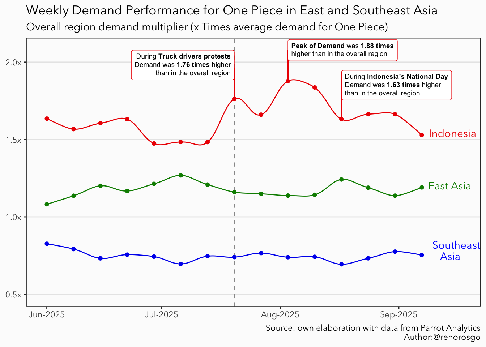
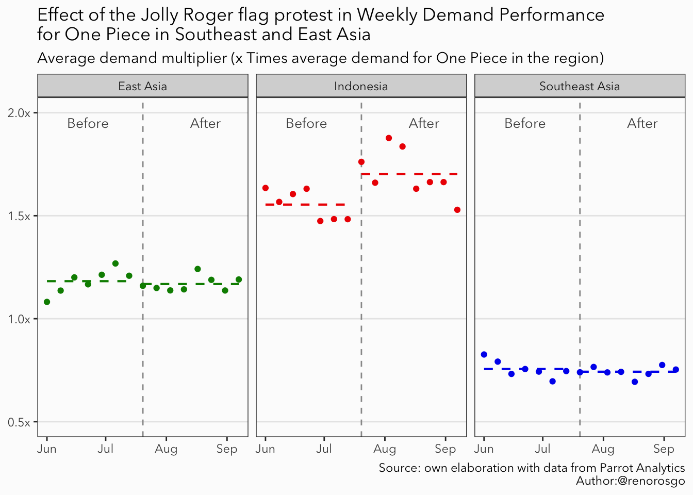
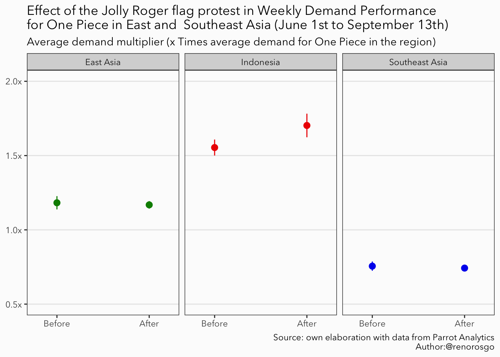
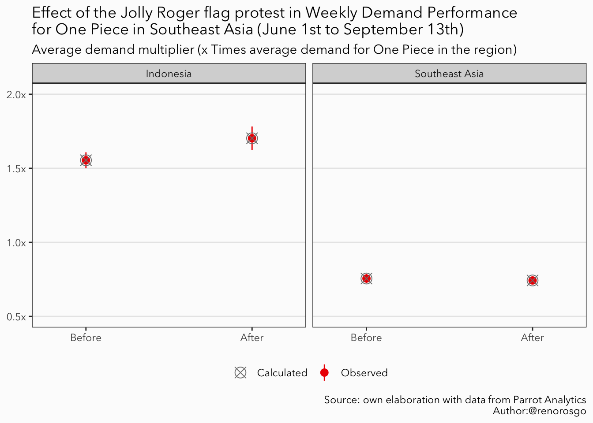
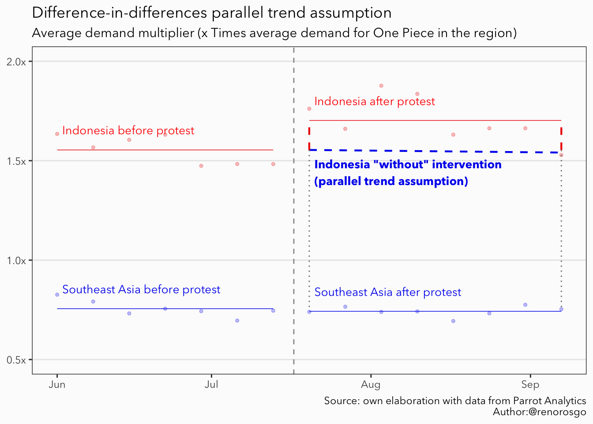
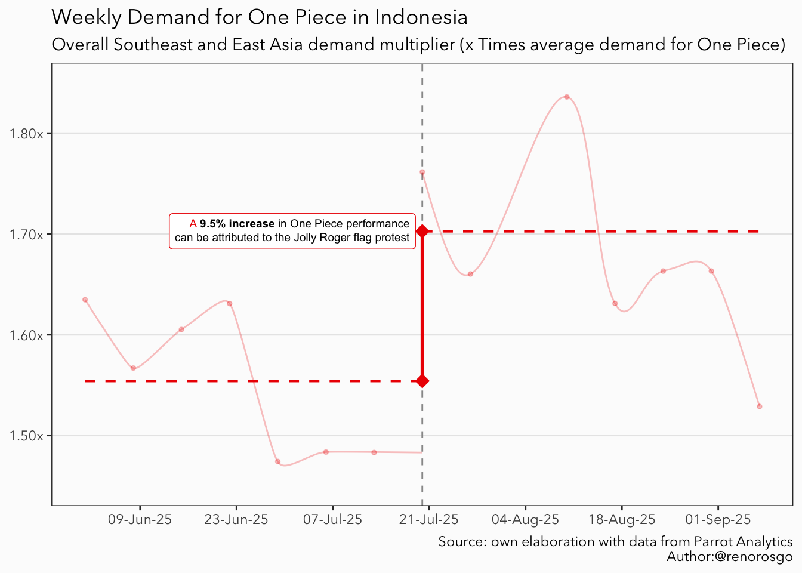

How significant is One Piece for The Jolly Roger protest in Indonesia?
Author
René Rosado González
Published
September 16, 2025
Popular culture has evolved beyond mere entertainment; it has become a significant medium for self-expression and social connection. In Indonesia, a surprising symbol of rebellion, adventure, and resistance against oppression has emerged among protesters. But how strong is the symbolic significance of this emblem? In this post, we will explore how data from the entertainment industry can illuminate the role of One Piece in Indonesia’s protests. By employing causal inference methods and data from Parrot Analytics, we aim to determine whether the popularity of this fictional world reflects real-life actions and what this reveals about the relationship between pop culture and social change.
Quick context on Indonesia and the recent protest.
Recently, Indonesia has seen a wave of protests fueled by economic and political frustrations, along with rising uncertainty about the future. Since late July, truck drivers in the country have started waving the Jolly Roger flag as a way to protest new transport regulations. What began as a viral trend on social media quickly turned into a collective movement, with demonstrators nationwide raising the flag to symbolize their discontent during Indonesia’s 80th National Day.
Source: TikTok/@tiktokhubpages
The Jolly Roger flag of the Straw Hat Pirates from One Piece, a hugely popular Japanese manga and anime series with over 1,100 episodes aired in more than 80 countries, symbolizes the adventurous and rebellious spirit of Monkey D. Luffy and his crew, who stand against a globally oppressive and corrupt government. Interestingly, protesters have adopted this flag as a symbol of collective identity; it represents not only the desire to end corruption but also embodies the Mugiwaras’ promise of freedom and justice. Émile Durkheim believed that symbols, along with shared beliefs and values, create a collective consciousness that holds society together. This illustrates that popular culture does more than entertain us; it shapes our daily lives and provides us with meaningful symbols that can inspire action. Such symbols transcend the fictional realm and become part of real-world struggles.
Copyright: Claudio Pramana/NurPhoto
Stories like One Piece play a significant role in shaping the social landscape by helping people envision and embody their hopes for change. The symbols within these narratives serve as rallying cries, representing a form of cultural glocalization that blends global media with local struggles. These stories provide social movements with both a narrative and imagery that they can draw strength from, making the fight for a better Indonesia not just a political issue but also a collective experience of resistance and resilience rooted in global popular culture.
How strong is the symbolic significance of One Piece is for the social movement in Indonesia?
When we refer to symbolic value, we are usually talking about the subjective importance that comes from the meanings, associations, and messages expressed within a specific socio-cultural context. However, in today’s information age, we have the tools to evaluate, to some degree, the significance of an object, idea, action, or, in this case, a piece of content within the collective consciousness.
The Demand Expressions™ data from Parrot Analytics captures audience attention, engagement, desire, and viewership across all markets, in all languages, and across all platforms and devices. I am using weekly demand data from June 1st to September 13th in a difference-in-differences (DiD) regression model to analyze whether interest in One Piece in the Indonesian market has changed significantly compared to other Southeast and East Asian markets since the start of the Jolly Roger flag protest. I am working under the assumption that if the results show a positive and significant difference, the varying demand for One Piece in Indonesia, relative to its average performance in the region, can be attributed to its symbolic significance for the collective identity of the protest.
Estimating a DiD regression model in R
The first step is to start our R session and load the tidyverse toolkit for our analysis. I recommend using extensions for ggplot2, such as ggalt and ggtext, as they offer greater control over the customization of our visuals. Finally, I utilize stargazer to create well-formatted regression tables for presenting my results.
Show the code
library(tidyverse) # For data wrangling library(ggplot2) # For nice data visualizationlibrary(ggalt) # For nice smooth splines library(ggtext) # For modifying titles and labels text library(stargazer) # For nice regression tables
The next step is to plot the average weekly per-capita demand for One Piece over time in Indonesia, East Asia, and Southeast Asia (excluding Indonesia), while also comparing it to the overall regional average. I included East Asia in the analysis for two main reasons. First, to account for variations in the popularity of the show within the Asian market, such as new episode releases or events like One Piece Day. Second, to control for potential spillover effects that the protests in Indonesia may have generated in other Southeast Asian markets, such as Nepal. The graph below illustrates that after the Jolly Roger flag protest began, the demand for the show in Indonesia peaked at 1.88 times higher than the average demand in the region.
Show the code
### Labels and data points for visuals #### Create a tibble with the coordinates of market labelslabels = data %>%# Group by marketgroup_by(market) %>%# Keep the last observationfilter(date ==max(date)) %>%# This trick is just to have a nice labelmutate(market =ifelse(# For the 'Southeast Asia' labeltest = market =='Southeast Asia',# Add a nice line break and centered textyes ='Southeast east\n Asia', # The rest stay the sameno = market ) )# Get min date limitmin_date = data %>%filter(date ==min(date)) %>%pull(date) %>%unique() # Get max date limitmax_date = data %>%filter(date ==max(date)) %>%pull(date) %>%unique() ## Save relevant dates and demand ### Cutoff date ('2025-07-20')cutoff =ymd('2025-07-20')# Truck protest datetruck_date = data %>%filter(market =='Indonesia', date ==ymd('2025-07-20')) %>%pull(date)# Truck protest demandtruck_demand = data %>%filter(market =='Indonesia', date ==ymd('2025-07-20')) %>%pull(region_multiplier)# Indonesia's National day datenational_day_date = data %>%filter(market =='Indonesia', date ==ymd('2025-08-17')) %>%pull(date)# Indonesia's National day demandnational_day_demand = data %>%filter(market =='Indonesia', date ==ymd('2025-08-17')) %>%pull(region_multiplier)# Peak demand's datepeak_date = data %>%filter(market =='Indonesia') %>%filter(region_multiplier ==max(region_multiplier)) %>%pull(date)# Peak demandpeak_demand = data%>%filter(market =='Indonesia') %>%filter(region_multiplier ==max(region_multiplier)) %>%pull(region_multiplier)### Overal Time Series #### Create a ggplot canvasggplot(# Data to plotdata = data, # Data-related aestheticsmapping =aes(x = date, y = region_multiplier, col = market) ) +# ggalt geom_xpline give us soft lines using splinesgeom_xspline(spline_shape =-0.5) +# Add vertical linegeom_vline(# This is the week when the first flag was shown (at leas in the news)xintercept =c(cutoff),# Modify the aestheticslinetype ='dashed', col ='gray60' ) +# Add pointsgeom_point() +# Add textgeom_text(# Use our labeled datadata = labels, aes(label = market), # Modify justification and lineheightvjust =0.25, hjust =-0.15, lineheight =0.9 ) +# Add segemnt from point to labelgeom_segment(# X coordsx = truck_date, xend = truck_date, # Y coordsy = truck_demand, yend = truck_demand +0.2,# Set aestheticscol ='red2' ) +# Annotate the relevant textannotate(# Use GeomRichtext as geomgeom = ggtext::GeomRichtext,# Set coordinatesx = truck_date, y = truck_demand +0.22,# Set labellabel =sprintf(# Html and linked to data formatfmt ="<span style='color:black'>During **Truck drivers protests**<br>Demand was **%s times** higher<br>than in the overall region</span>",round(x = truck_demand, digits =2) ),# Set aestheticssize =2.5, hjust =1, vjust =0.5, color ='red2', ) +# Add segemnt from point to labelgeom_segment(# X coordsx = national_day_date, xend = national_day_date, # Y coordsy = national_day_demand, yend = national_day_demand +0.2,# Set aestheticscol ='red2' ) +# Annotate the relevant textannotate(# Use GeomRichtext as geomgeom = ggtext::GeomRichtext,# Set coordinatesx = national_day_date, y = national_day_demand +0.22,# Set labellabel =sprintf(# Html and linked to data formatfmt ="<span style='color:black'>During **Indonesia's National Day**<br>Demand was **%s times** higher<br>than in the overall region</span>",round(x = national_day_demand,digits =2) ),# Set aestheticssize =2.5, hjust =0, vjust =0.5, color ='red2', ) +# Add segemnt from point to labelgeom_segment(# X coordsx = peak_date, xend = peak_date, # Y coordsy = peak_demand, yend = peak_demand +0.2,# Set colorcol ='red2' ) +# Annotate the relevant textannotate(# Use GeomRichtext as geomgeom = ggtext::GeomRichtext,# Set coordinatesx = peak_date, y = peak_demand +0.2,# Html and linked to data formatlabel =sprintf(fmt ="<span style='color:black'>**Peak of Demand** was **%s times**<br>higher than in the overall region</span>",round(x = peak_demand, digits =2) ),# Set aestheticssize =2.5, hjust =0, vjust =0.5, color ='red2', ) +# Add labelslabs(title ='Weekly Demand Performance for One Piece in East and Southeast Asia',subtitle ='Overall region demand multiplier (x Times average demand for One Piece)',caption ='Source: own elaboration with data from Parrot Analytics\nAuthor:@renorosgo' ) +# Modify color scale (I repeated blue to match our modified label of Southeast East Asia)scale_color_manual(values =c('green4','red2','blue2','blue')) +# Modify x axis limitsscale_x_date(limits =c(min_date, max_date +10), date_labels ="%b-%Y") +# Modify y axis limits and label unitsscale_y_continuous(limits =c(0.5,NA), labels = scales::unit_format(suffix ='x')) +# Set the base themetheme_bw(paper ='gray99', base_family ='Avenir Next') +# Additional tweaks to the theme theme(# Remove titles from de axisaxis.title =element_blank(),# Delete some gridspanel.grid.minor =element_blank(),panel.grid.major.x =element_blank(),# Remove legend (recommended to avoid writing to many `show.legend = F`)legend.position ='none' )

Figure 1
The central idea of DiD regression is to estimate the causal effect of an intervention, such as the Jolly Roger flag protest. This method involves comparing the average changes over time between a group that experiences the intervention (Indonesia) and a control group that does not (the other Southeast and East Asian markets). The plot below illustrates, with a dashed line, the average demand multiplier for each market before and after the initiation of the Jolly Roger flag protest in Indonesia.
Show the code
### Average Time Series #### Create a variable to differentiate between the before and afterdata = data %>%mutate(intervention =ifelse(test = date < cutoff, yes =0, no =1)) %>%# Get the market average for the before and afterwith_groups(.groups =c(market, intervention), mutate, average_multiplier =mean(region_multiplier) )# Create a ggplot canvasggplot(# Data to plotdata = data, # Data-related aestheticsmapping =aes(x = date, y = region_multiplier, col = market) ) +# Add vertical linegeom_vline(# This is the week when the first flag was shown (at least in the news)xintercept =c(cutoff),# Modify the aestheticslinetype ='dashed', col ='gray60' ) +# Add pointgeom_point() +# Add a dashed line with the average multiplier for the Beforestat_smooth(data =filter(data, date < cutoff),mapping =aes(x = date, y = average_multiplier, col = market),method ='lm', linetype ='dashed', linewidth =0.75 ) +# Add a dashed line with the average multiplier for the Afterstat_smooth(data =filter(data, date >= cutoff),mapping =aes(x = date, y = average_multiplier, col = market),method ='lm', linetype ='dashed', linewidth =0.75 ) +# Add the Before textannotate(geom ='text',label ='Before', # Set coordinatesx =c(ymd('2025-06-22')), y =1.95,# Set aestheticssize =3.5, color ='gray30', ) +# Add the After textannotate(geom ='text', label ='After',# Set coordinatesx =c(ymd('2025-08-21')), y =1.95,# Set aestheticssize =3.5, color ='gray30', ) +# Facet by marketfacet_wrap(~market) +# Add labelslabs(title ='Effect of the Jolly Roger flag protest in Weekly Demand Performance\nfor One Piece in Southeast and East Asia',subtitle ='Average demand multiplier (x Times average demand for One Piece in the region)',caption ='Source: own elaboration with data from Parrot Analytics\nAuthor:@renorosgo' ) +# Modify colorsscale_color_manual(values =c('green4','red2','blue2')) +# Modify Y axis limits and unitsscale_y_continuous(limits =c(0.5,2), labels = scales::unit_format(suffix ='x')) +# Set the base themetheme_bw(paper ='gray99', base_family ='Avenir Next') +# Additional tweaks to the theme theme(# Remove titles from de axisaxis.title =element_blank(),# Delete some gridspanel.grid.minor =element_blank(),panel.grid.major.x =element_blank(),# Remove legend (recommended to avoid writting to many `show.legend = F`)legend.position ='none' )

Figure 2
We can observe an increase in the average multiplier value for Indonesia after the protest began. Our objective is to determine whether the differences in demand before and after the protest are statistically significant when compared to the behavior of the control markets.
Show the code
### Average before and after effects #### Create a ggplot canvasggplot(data = data, mapping =aes(x = intervention, y = region_multiplier, color = market) ) +# Add points with 1.96 sestat_summary(geom ='pointrange', fun.data ='mean_se', fun.args =list(mult =1.96)) +# Add labelslabs(title ='Effect of the Jolly Roger flag protest in Weekly Demand Performance\nfor One Piece in East and Southeast Asia (June 1st to September 13th)',subtitle ='Average demand multiplier (x Times average demand for One Piece in the region)',caption ='Source: own elaboration with data from Parrot Analytics\nAuthor:@renorosgo' ) +scale_x_continuous(breaks =c(0,1), labels =c('Before', 'After'), limits =c(-0.25,1.25)) +facet_wrap(~market) +scale_color_manual(values =c('green4','red2','blue2')) +# Modify Y axis limits and unitsscale_y_continuous(limits =c(0.5,2), labels = scales::unit_format(suffix ='x')) +# Set the base themetheme_bw(paper ='gray99', base_family ='Avenir Next') +# Additional tweaks to the theme theme(# Remove titles from de axisaxis.title =element_blank(),# Delete some gridspanel.grid.minor =element_blank(),panel.grid.major.x =element_blank(),# Remove legend (recommended to avoid writting to many `show.legend = F`)legend.position ='none' )

Figure 3
DiD explained step by step
To gain a better understanding of the DiD procedure, we can create a table that displays the average values for both Indonesia and the control markets before and after the intervention. This table will show the average values prior to the Jolly Roger Flag’s protest, as well as the averages after the protest.
Next, we will calculate the changes over time for each group by subtracting the pre-protest average from the post-protest average. The key row of the table will highlight the difference between these two changes; this is known as the “difference-in-differences” estimate. This estimate represents the intended impact of the intervention. Essentially, this method isolates the portion of the change in the treated group (Indonesia) that exceeds or falls short of the change observed in the control group (the other Southeast and East Asian markets), providing a clear measure of the intervention’s effect.
Jolly Roger flag protest
Before
After
Average Difference
Indonesia
A
B
B - A
Control Market
C
D
D - C
Average Difference
A - C
B - D
(B - A) - (D - C)
We can easily fill in the first row for our treated market using dplyr syntax. After the intervention, we observed that the average weekly demand increased by 0.15 units in the multiplier.
Show the code
data = data %>%mutate(# Create a treatment variabletreatment =ifelse(market =='Indonesia', 1, 0),# Create a DiD variableDiD = treatment * intervention )# A cellbefore_treatment = data %>%# Treated market before interventionfilter(treatment ==1, intervention ==0) %>%# Average multipliersummarise(A =mean(region_multiplier)) %>%# Pull the valuepull(A)# B cellafter_treatment = data %>%# Treated market after interventionfilter(treatment ==1, intervention ==1)%>%# Average multipliersummarise(B =mean(region_multiplier)) %>%# Pul the valuepull(B)
Jolly Roger flag protest
Before
After
Average Difference
Indonesia
1.554
1.703
0.149
Control Market
C
D
D - C
Average Difference
A - C
B - D
(B - A) - (D - C)
Let’s calculate the average for the Southeast Asian market, which will act as our control group. We can follow the same steps as in our previous analysis, making just a few modifications to our code to complete the rest of the table. After our intervention, we observed that the change in the demand multiplier for the control group was -0.01. By subtracting the average difference of the control group from the average difference of the treated group, we can determine our DiD estimation. Our calculations show that the average impact of the Jolly Roger Flag protest on the demand performance of One Piece resulted in an increase of approximately 0.16 units in the multiplier compared to the average market in Southeast Asia.
Show the code
# Filter our interest marketdata_se = data %>%filter(market %in%c('Indonesia','Southeast Asia'))# C cellbefore_control = data_se %>%# Control market before interventionfilter(treatment ==0, intervention ==0) %>%# Average multipliersummarise(C =mean(region_multiplier)) %>%# Pull the valuepull(C)# D cellafter_control = data_se %>%# Control market after interventionfilter(treatment ==0, intervention ==1) %>%# Average multipliersummarise(D =mean(region_multiplier)) %>%# Pull the valuepull(D)# Diff in diff estimatordiff_in_diff = (after_treatment - before_treatment) - (after_control - before_control)
Table 1: My Caption
Jolly Roger flag protest
Before
After
Average Difference
Indonesia
1.554
1.703
0.149
Control Market
0.756
0.743
-0.013
Average Difference
0.798
0.96
0.162
If we plot our difference-in-differences calculations alongside our previously calculated average, we can confirm that they align with the average observed values we plotted earlier; in fact, they are the same.
Show the code
### diff in diff graph ###did_df =tibble(# Market namemarket =c('Indonesia', 'Indonesia','Southeast Asia','Southeast Asia'),# Intervention columnintervention =c(0 , 1, 0, 1),# Treatment columntreatment =c(1, 1, 0, 0),# Calculated valuresvalues =c(before_treatment, after_treatment, before_control, after_control))# Create a ggplot canvasggplot(data = data_se, mapping =aes(x = intervention, y = region_multiplier)) +# Add points with 1.96 sestat_summary(# Add colourmapping =aes(color ='Observed'), # Additional aestheticsgeom ='pointrange', fun.data ='mean_se', fun.args =list(mult =1.96) ) +# Add our calculated averagesgeom_point(data = did_df, mapping =aes(x = intervention, y = values, col ='Calculated'), # Modify aestheticsshape =13, size =4 ) +# Add labelslabs(title =bquote('Effect of the Jolly Roger flag protest in Weekly Demand Performance\nfor One Piece in Southeast Asia (June 1st to September 13th)'),subtitle ='Average demand multiplier (x Times average demand for One Piece in the region)',caption ='Source: own elaboration with data from Parrot Analytics\nAuthor:@renorosgo',color ="Mean"# Legend title ) +# Split by marketfacet_wrap(~market) +# Modify scalesscale_x_continuous(breaks =c(0,1), labels =c('Before', 'After'), limits =c(-0.25,1.25)) +# Modify Y axis limits and unitsscale_y_continuous(limits =c(0.5,2), labels = scales::unit_format(suffix ='x')) +# Scale colorscale_color_manual(values =c('gray50','red2')) +# Set the base themetheme_bw(paper ='gray99', base_family ='Avenir Next') +# Additional tweaks to the theme theme(# Remove titles from de axisaxis.title =element_blank(),# Delete some gridspanel.grid.minor =element_blank(),panel.grid.major.x =element_blank(),legend.position ='bottom',legend.title =element_blank() )

Figure 4
A key requirement for the validity of the difference-in-differences method is the parallel trend assumption. This assumption posits that, in the absence of the intervention, the treated group and the control group would have exhibited similar trends or patterns in their outcomes over time. In simpler terms, had there been no changes related to the protest, the demand performance of One Piece in both markets would likely have followed a similar trajectory.
This assumption allows us to attribute any differences in trends observed after the intervention to the effect of the Jolly Roger protest, rather than to other factors or inherent differences between the groups. Essentially, it ensures that the only systematic difference noted after the intervention is due to the treatment itself. This validation supports the causal interpretation of the difference-in-differences estimate. The following plot provides a graphic representation of our parallel trend assumption, illustrated with a blue dashed line. The potential impact of the Jolly Roger flag protest in Indonesia is indicated by a vertical red dashed line.
Show the code
# Min x for segment annotationmin_x = data_se %>%filter(date >= cutoff) %>%pull(date) %>%min()# Max x for segment annotationmax_x = data_se %>%filter(date >= cutoff) %>%pull(date) %>%max()# Create a ggplot canvasggplot(# Data to plotdata = data_se, # Data-related aestheticsmapping =aes(x = date, y = region_multiplier, col = market) ) +# Add vertical linegeom_vline(# This is the week when the first flag was shown (at least in the news)xintercept =c(cutoff) -3,# Modify the aestheticslinetype ='dashed', col ='gray60' ) +# Add pointgeom_point(size =1, alpha =0.25) +# Add a dashed line with the average multiplier for the Beforestat_smooth(data =filter(data_se, date < cutoff),mapping =aes(x = date, y = average_multiplier, col = market),method ='lm', linewidth =0.25 ) +# Add a dashed line with the average multiplier for the Afterstat_smooth(data =filter(data_se, date >= cutoff),mapping =aes(x = date, y = average_multiplier, col = market),method ='lm', linewidth =0.25 ) +# Draw the parallel trendannotate(geom ='segment',# Set coordinatesx = min_x, xend = max_x, y = before_treatment, yend = after_treatment - diff_in_diff,# Set aestheticslinetype ='dashed', col ='blue2', linewidth =0.75 ) +# Add vertical gray projection linesannotate(geom ='segment',# Set coordinatesx =c(min_x, max_x), xend =c(min_x, max_x), y = before_treatment, yend = before_control,# Set aestheticslinetype ='dotted', col ='gray50' ) +# Add the potential effectannotate(geom ='segment',# Set coordinatesx =c(min_x, max_x), xend =c(min_x, max_x), y = before_treatment, yend = after_treatment,# Set aestheticslinetype ='dashed', col ='red2', linewidth =0.75 ) +# Add textannotate(geom ='text', label ='Indonesia before protest', # Set coordinatesx =c(ymd('2025-06-02')), y = before_treatment +0.1,# Set aestheticssize =3.5, color ='red', hjust =0 ) +# Add textannotate(geom ='text', label ='Southeast Asia before protest', # Set coordinatesx =c(ymd('2025-06-02')), y = before_control +0.1,# Set aestheticssize =3.5, color ='blue2', hjust =0 ) +# Add textannotate(geom ='text', label ='Indonesia after protest', # Set coordinatesx = min_x +1, y = after_treatment +0.1,# Set aestheticssize =3.5, color ='red', hjust =0 ) +# Add textannotate(geom ='text', label ='Southeast Asia after protest', # Set coordinatesx = min_x +1, y = after_control +0.1,# Set aestheticssize =3.5, color ='blue2', hjust =0 ) +# Add textannotate(geom ='text', label ='Indonesia "without" intervention\n(parallel trend assumption)', # Set coordinatesx = min_x +1, y = after_treatment - diff_in_diff -0.1,# Set aestheticssize =3.5, color ='blue2', hjust =0, fontface ="bold" ) +# Add labelslabs(title ='Difference-in-differences parallel trend assumption',subtitle ='Average demand multiplier (x Times average demand for One Piece in the region)',caption ='Source: own elaboration with data from Parrot Analytics\nAuthor:@renorosgo' ) +# Modify colorsscale_color_manual(values =c('red2','blue2')) +# Modify Y axis limits and unitsscale_y_continuous(limits =c(0.5,2), labels = scales::unit_format(suffix ='x')) +# Set the base themetheme_bw(paper ='gray99', base_family ='Avenir Next') +# Additional tweaks to the theme theme(# Remove titles from de axisaxis.title =element_blank(),# Delete some gridspanel.grid.minor =element_blank(),panel.grid.major.x =element_blank(),# Remove legend (recommended to avoid writting to many `show.legend = F`)legend.position ='none' )

We want to determine whether the Difference-in-Differences (DiD) estimate of 0.16 is statistically significant. In other words, we aim to confirm that this estimate is genuinely different from zero and not merely a result of random variation.
Linear regression is an effective method for simultaneously analyzing the combined effects of multiple factors. When applied to a DiD analysis, it considers important information, such as whether a market received the intervention, whether the time period is before or after the intervention, and crucially, whether the market was treated after the change.
The fundamental idea is straightforward: we want to mathematically describe our red and blue dashed lines in Figure 2 using the following equation:
The following table displays the results of our linear regression, which uses the average performance of Southeast Asian markets as a control. Notably, the estimates for each variable correspond with those from Table 1. This correlation occurs because linear regression uses matrix operations to estimate the coefficients, ( _i ), centered around the mean.
The advantage of conducting this statistical analysis is that it allows us to assess the statistical significance of our findings. As we can observe, the estimate of -0.01 for the intervention variable, which we calculated earlier, is not statistically significant. This means it is not significantly different from zero, indicating that our control market did not experience any change in average performance following the onset of the Jolly Roger flag protest.
In contrast, estimates that are statistically significant are considered different from zero. Specifically, our Difference-in-Differences (DiD) estimator indicates an increase of 0.16 units in the multiplier when compared to the control group, which can be attributed to the Jolly Roger flag protest associated with One Piece.
Show the code
model_1 =lm(# This is how we input the formula for the regresion modelformula = region_multiplier ~ intervention + treatment +`DiD`,# We are using our previously filtered datadata = data_se)
Dependent variable:
Demand Multiplier
intervention
-0.013
(0.038)
treatment
0.798***
(0.039)
DiD
0.162***
(0.053)
Constant
0.756***
(0.028)
Observations
30
R2
0.977
Adjusted R2
0.975
Residual Std. Error
0.073 (df = 26)
F Statistic
372.429*** (df = 3; 26)
Note:
⋆p<0.1;⋆⋆p<0.05; ⋆⋆⋆p<0.01
A key component of this analysis is a specific term that captures the combined effect of being in the treated group after the intervention. This DiD term indicates how much of the change in demand can be directly attributed to the intervention, helping to isolate its impact from other influencing factors and providing a clearer understanding of its true effects.
To strengthen the validity of the Southeast Asia model, we will estimate a new DiD regression using the average market data from East Asia as our control group. This approach allows us to account for variations in the show’s popularity within the Asian market, such as the release of new episodes or other relevant events. It also helps prevent underestimating the effects due to the influence Indonesia may have had on other Southeast Asian markets, such as Nepal.
Consistent with the previous model, the East Asia model shows a significant increase of 0.16 units in the multiplier compared to the average East Asian market. Additionally, we do not observe any significant impact from the Jolly Roger flag protest in the control market.
Show the code
model_2 = data %>%# Filter to remove the Southeast marketfilter(market !='Southeast Asia') %>%# Run the regresionlm(formula = region_multiplier ~ intervention + treatment +`DiD`)
Dependent variable:
Demand Multiplier
Southeast Asia
East Asia
(1)
(2)
intervention
-0.013
-0.014
(0.038)
(0.040)
treatment
0.798***
0.372***
(0.039)
(0.041)
DiD
0.162***
0.163***
(0.053)
(0.056)
Constant
0.756***
1.182***
(0.028)
(0.029)
Observations
30
30
R2
0.977
0.915
Adjusted R2
0.975
0.905
Residual Std. Error (df = 26)
0.073
0.077
F Statistic (df = 3; 26)
372.429***
92.982***
Note:
⋆p<0.1; ⋆⋆p<0.05; ⋆⋆⋆p<0.01
Finally, we can examine potential short-term spillovers in the Southeast Asian markets by applying the same methodology. We will designate the average Southeast Asian market as our treatment group, while the average East Asian market will serve as our control group for the DiD regression. The table below shows that neither the intervention nor the DiD estimates are statistically significant. This indicates that we cannot find evidence of any differentiated behavior between these two markets following the intervention. At least for the analyzed period, there were no short-term spillover effects observed in the average Southeast Asian market.
Show the code
model_3 = data %>%# Filter to remove the Southeast marketfilter(market !='Indonesia') %>%mutate(treatment =ifelse(market =='Southeast Asia', 1, 0),DiD = treatment * intervention) %>%# Run the regresionlm(formula = region_multiplier ~ intervention + treatment +`DiD`)
Dependent variable:
Demand Multiplier
intervention
-0.014
(0.022)
treatment
-0.426***
(0.022)
DiD
0.001
(0.031)
Constant
1.182***
(0.016)
Observations
30
R2
0.967
Adjusted R2
0.964
Residual Std. Error
0.042 (df = 26)
F Statistic
256.540*** (df = 3; 26)
Note:
⋆p<0.1; ⋆⋆p<0.05; ⋆⋆⋆p<0.01
Long story short…
We have seen the profound power of One Piece and its iconic Jolly Roger flag,which extend beyond mere entertainment and resonate deeply within Indonesia’s protest movement. Statistical methods like difference-in-differences support this connection, reminding us that symbols like One Piece embody collective hopes and desires, serving as cultural anchors during times of social upheaval.
What is the symbolic value of One Piece for the Jolly Roger protests in Indonesia? Our analysis reveals that it is at least enough to raise the demand of the series, which manga has sold over 516 million copies and anime has amassed millions of viewing hours on platforms like Netflix, surged by nearly 9.5% in response to the protests. This increase underscores how popular culture can unite communities in their shared aspirations for change and justice.
Show the code
data %>%filter(market =='Indonesia') %>%# Create a ggplot canvasggplot(# Data-related aestheticsmapping =aes(x = date, y = region_multiplier, col = market) ) +# Add vertical linegeom_vline(# This is the week when the first flag was shown (at leas in the news)xintercept =c(cutoff),# Modify the aestheticslinetype ='dashed', col ='gray60' ) +# Add pointgeom_point(size =1, alpha =0.25) +# Add a dashed line with the average multiplier for the Beforegeom_xspline(data =filter(data, date < cutoff, market =='Indonesia') %>%mutate(date =ifelse(date ==max(date), cutoff, date)),mapping =aes(x = date, y = region_multiplier, col = market),linewidth =0.5, alpha =0.25 ) +# Add a dashed line with the average multiplier for the Aftergeom_xspline(data =filter(data, date >= cutoff, market =='Indonesia'),mapping =aes(x = date, y = region_multiplier, col = market), spline_shape =-0.5, alpha =0.25 ) +# Add a dashed line with the average multiplier for the Beforestat_smooth(data =filter(data, date < cutoff, market =='Indonesia')%>%mutate(date =ifelse(date ==max(date), cutoff, date)),mapping =aes(x = date, y = average_multiplier),method ='lm', linetype ='dashed', linewidth =0.75, col ='red2' ) +# Add a dashed line with the average multiplier for the Afterstat_smooth(data =filter(data, date >= cutoff, market =='Indonesia') ,mapping =aes(x = date, y = average_multiplier),method ='lm', linetype ='dashed', linewidth =0.75, col ='red2' ) +annotate(geom ='segment',x = cutoff, xend = cutoff,y = before_treatment, yend = after_treatment,col ='red2', linewidth =1 ) +annotate(geom ='point',x = cutoff, y =c(before_treatment, after_treatment), shape =18, size =4, col ='red2' ) +# Annotate the relevant textannotate(# Use GeomRichtext as geomgeom = ggtext::GeomRichtext,# Set coordinatesx = cutoff -1, y = after_treatment,# Html and linked to data formatlabel =sprintf(fmt ="A <span style='color:black'>**%s%% increase** in One Piece performance<br>can be attributed to the Jolly Roger flag protest</span>",round(x =100* diff_in_diff/after_treatment, digits =2) ),# Set aestheticssize =2.5, hjust =1, vjust =0.5, color ='red2', ) +# Add labelslabs(title ='Weekly Demand for One Piece in Indonesia',subtitle ='Overall Southeast and East Asia demand multiplier (x Times average demand for One Piece)',caption ='Source: own elaboration with data from Parrot Analytics\nAuthor:@renorosgo' ) +# Modify colorsscale_color_manual(values =c('red2')) +# Modify Y axis limits and unitsscale_y_continuous(limits =c(1.45,1.85), labels = scales::unit_format(suffix ='x')) +scale_x_date(date_labels ="%d-%b-%y", date_breaks ="2 weeks") +# Set the base themetheme_bw(paper ='gray99', base_family ='Avenir Next') +# Additional tweaks to the theme theme(# Remove titles from de axisaxis.title =element_blank(),# Delete some gridspanel.grid.minor =element_blank(),panel.grid.major.x =element_blank(),# Remove legend (recommended to avoid writting to many `show.legend = F`)legend.position ='none' )

Figure 5
Ultimately, this case illustrates that entertainment and storytelling are not merely forms of escapism; they are vital forces that shape social identities and inspire collective action. As societies continue to evolve, embracing these cultural dynamics becomes essential for engaging with and interpreting contemporary social movements.